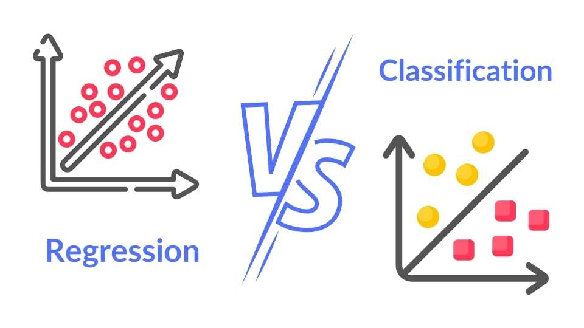
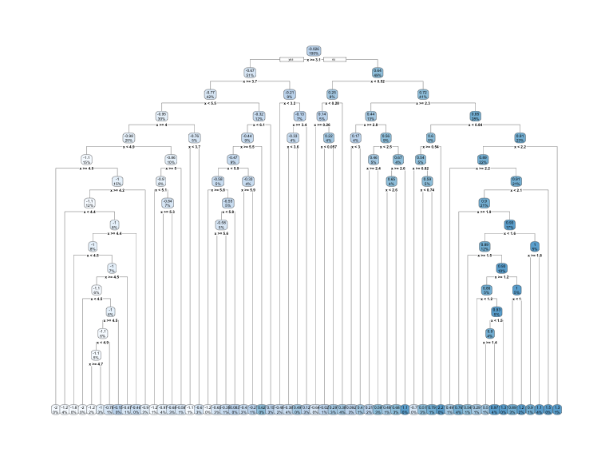

Random Forest con {tidymodels}
Análisis espacial con R
Random Forest
¿Qué es machine learning?

¿Qué es machine learning?

¿Qué es machine learning?

¿Qué es Random Forest?
Random Forestes un método deMachine Learningque se utiliza principalmente para tareas de clasificación y regresión.Opera construyendo múltiples
árboles de decisióndurante el entrenamiento y fusionando sus resultados para mejorar la precisión y la solidez.Características clave:
Aprendizaje conjunto: Random Forest combina las predicciones de numerososárboles de decisiónpara reducir el sobreajuste y mejorar la generalización.Bootstrap Aggregating (Bagging): utiliza una técnica llamadabagging, donde se muestrean subconjuntos aleatorios de los datos de entrenamiento con reemplazo para crear diversos árboles.
¿Qué es Random Forest?
Características clave:
Aleatoriedad de predictores (features): al dividir nodos durante la construcción del árbol, Random Forest selecciona aleatoriamente un subconjunto de predictores, lo que contribuye aún más a la diversidad de los árboles.Votación/Promedio:para las tareas de clasificación, la predicción final se realiza mediante votación mayoritaria entre los árboles, mientras que para las tareas de regresión, se promedian las predicciones.Robustez:es menos sensible al ruido y puede manejar grandes conjuntos de datos con alta dimensionalidad de manera efectiva.
¿Qué es Random Forest?
Supuestos del Random Forest
Independencia de los árboles:los árboles de decisión del bosque deben ser independientes entre sí. Esto se logra mediante muestreo bootstrap y aleatoriedad de características.Datos suficientes:Random Forest requiere una gran cantidad de datos para construir diversos árboles y lograr un rendimiento óptimo.Árboles equilibrados:el algoritmo supone que los árboles individuales crecen lo suficientemente profundos como para capturar los patrones subyacentes en los datos.Manejo de datos ruidosos:Random Forest puede manejar datos ruidosos, pero supone que el ruido se distribuye aleatoriamente y no es sistemático.
¿Qué es Random Forest?
Árboles de decisión
Los modelos basados en árboles son una clase de algoritmos no paramétricos que funcionan dividiendo el espacio de características en una serie de regiones más pequeñas (no superpuestas) con valores de respuesta similares utilizando un conjunto de reglas de división.
Árboles de decisión
Ejemplo simple

Árboles de decisión
Estructura

Árboles de decisión
Se puede utilizar para:
Árboles de decisión
¿Cómo se realiza la partición?
Regresión
CART utiliza particiones recursivas binarias (es recursiva porque cada división o regla depende de las divisiones que se encuentran sobre ella).
El objetivo en cada nodo es encontrar la “mejor” característica \((x_i)\) para dividir los datos restantes en una de dos regiones (R1 y R2) de modo que el error general entre la respuesta real \((y_i)\) y la constante predicha \((c_i)\) se minimiza.
\[MSE= \sum_{i \epsilon R_1}^n(Y_i-c_1)^2 +\sum_{i \epsilon R_2}^n(Y_i-c_2)^2\]
Para problemas de clasificación, la partición generalmente se realiza para maximizar la reducción de la entropía cruzada o el índice de Gini.
Árboles de decisión
Árboles de decisión
Árboles de decisión
¿Cuántas ramas debe tener el árbol?
Si creamos un árbol demasiado complejo como en la figura, tendemos a sobreajustar nuestros datos de entrenamiento, lo que resulta en un rendimiento de generalización deficiente.

Árboles de decisión
¿Cuántas ramas debe tener el árbol?
Árboles de decisión
Un ejemplo simple con meuse
Random Forest
¿Cómo Funciona?
Bagging: Bootstrap Aggregation, sirve como técnica de ensamblado/conjunto.
Random Forest
Pasos involucrados en Random Forest
Paso 1:en este modelo, se selecciona un subconjunto de puntos de datos y un subconjunto de características para construir cada árbol de decisión. En pocas palabras, se toman \(n\) registros aleatorios y \(m\) características del conjunto de datos que tiene \(k\) número de registros.Paso 2:Se construyen árboles de decisión individuales para cada muestra.Paso 3:Cada árbol de decisión generará un resultado.Paso 4:El resultado final se considera en función de la votación mayoritaria (clasificación) o el promedio (regresión).
Random Forest
Random Forest utiliza estimación del error out-of-bag (OOB) en cada submuestra.
El OOB es un método utilizado para estimar el error de predicción de Random Forest.
Aprovecha el concepto de agregación bootstrap, donde se crean múltiples subconjuntos del conjunto de datos original mediante muestreo aleatorio con reemplazo.
Algunas instancias del conjunto de datos no se incluirán en estos subconjuntos para entrenar un árbol determinado.
Estas instancias excluidas se conocen como muestras
"fuera de bolsa"(OOB).Para cada submuestra deja ~ \(1/3\) para calcular el error de predicción (validación cruzada)
Random Forest
¿Por qué Random Forest es poderoso?
Precisión:Random Forest a menudo proporciona una mayor precisión en comparación con los árboles de decisión individuales porque la agregación de predicciones reduce la varianza.Robustez:Es menos propenso al sobreajuste debido a la aleatoriedad introducida en los procesos de arranque y selección de características.Versatilidad:puede manejar tareas de clasificación y regresión y funciona bien con datos categóricos y numéricos.Importancia de las características:Random Forest proporciona información sobre la importancia de las diferentes características en la predicción de la variable objetivo, lo que puede resultar útil para la selección de características.
Random Forest con {tidymodels}
¿Qué es {tidymodels}?
library(tidymodels)
#> ── Attaching packages ──────────────────────────── tidymodels 1.0.0 ──
#> ✔ broom 1.0.0 ✔ rsample 1.0.0
#> ✔ dials 1.0.0 ✔ tibble 3.1.8
#> ✔ dplyr 1.0.9 ✔ tidyr 1.2.0
#> ✔ infer 1.0.2 ✔ tune 1.0.0
#> ✔ modeldata 1.0.0 ✔ workflows 1.0.0
#> ✔ parsnip 1.0.0 ✔ workflowsets 1.0.0
#> ✔ purrr 0.3.4 ✔ yardstick 1.0.0
#> ✔ recipes 1.0.1
#> ── Conflicts ─────────────────────────────── tidymodels_conflicts() ──
#> ✖ purrr::discard() masks scales::discard()
#> ✖ dplyr::filter() masks stats::filter()
#> ✖ dplyr::lag() masks stats::lag()
#> ✖ recipes::step() masks stats::step()
#> • Use tidymodels_prefer() to resolve common conflicts.¿Qué es {tidymodels}?
El juego completo
División en entrenamiento y testeo
Para el aprendizaje automático, normalmente dividimos los datos en conjuntos de entrenamiento y testeo:
- El set de entrenamiento se utiliza para estimar los parámetros del modelo.
- El set de testeo se utiliza para encontrar una evaluación independiente del rendimiento del modelo.
No üö´ utilice el set de testeo durante el entrenamiento.
División en entrenamiento y testeo
División en entrenamiento y testeo
- Utilizar demasiados datos en entrenamiento nos impide calcular una buena evaluación del rendimiento predictivo.
- Utilizar demasiados datos en testeo nos impide calcular una buena estimación de los parámetros del modelo.
División en entrenamiento y testeo
Con los datos de meuse
Hagamos la división de los datos
División en entrenamiento y testeo
Con los datos de meuse
Especificar un modelo
Especificar un modelo
Elegir el modelo
Elegir el motor
Elegir el modo
Todos los modelos disponibles se enumeran en https://www.tidymodels.org/find/parsnip/
Especificar un modelo
Modelo de flujo de trabajo (workflow)
Los flujos de trabajo manejan datos nuevos mejor que las herramientas básicas de R en términos de nuevos niveles de factores
- Puedes usar otros preprocesadores además de fórmulas (avanzados)
- Pueden ayudar a organizar su trabajo cuando trabaje con varios modelos.
- Lo más importante, un flujo de trabajo captura todo el proceso de modelado:
fit()ypredict()se aplican a los pasos de preprocesamiento además del ajuste real del modelo.
Modelo de flujo de trabajo (workflow)
Sin workflows
rf_spec <- rand_forest() |>
set_mode('regression') |>
set_engine('ranger')
rf_spec |>
fit(zinc~dist+soil,data = meuse)parsnip model object
Ranger result
Call:
ranger::ranger(x = maybe_data_frame(x), y = y, num.threads = 1, verbose = FALSE, seed = sample.int(10^5, 1))
Type: Regression
Number of trees: 500
Sample size: 155
Number of independent variables: 2
Mtry: 1
Target node size: 5
Variable importance mode: none
Splitrule: variance
OOB prediction error (MSE): 59221.39
R squared (OOB): 0.5604868 Modelo de flujo de trabajo (workflow)
Usando workflows
══ Workflow [trained] ══════════════════════════════════════════════════════════
Preprocessor: Formula
Model: rand_forest()
── Preprocessor ────────────────────────────────────────────────────────────────
zinc ~ dist + soil
── Model ───────────────────────────────────────────────────────────────────────
Ranger result
Call:
ranger::ranger(x = maybe_data_frame(x), y = y, num.threads = 1, verbose = FALSE, seed = sample.int(10^5, 1))
Type: Regression
Number of trees: 500
Sample size: 116
Number of independent variables: 2
Mtry: 1
Target node size: 5
Variable importance mode: none
Splitrule: variance
OOB prediction error (MSE): 63550.63
R squared (OOB): 0.5241185 Predecir utilizando el modelo entrenado
Evaluar las predicciones
# A tibble: 39 × 15
.pred x y cadmium copper lead zinc elev dist om ffreq
* <dbl> <dbl> <dbl> <dbl> <dbl> <dbl> <dbl> <dbl> <dbl> <dbl> <fct>
1 962. 181072 333611 11.7 85 299 1022 7.91 0.00136 13.6 1
2 830. 181025 333558 8.6 81 277 1141 6.98 0.0122 14 1
3 461. 181165 333537 6.5 68 199 640 7.8 0.103 13 1
4 450. 181060 333231 2.4 37 133 347 8.67 0.185 10.6 1
5 228. 181232 333168 1.6 24 80 183 9.05 0.310 6.3 1
6 223. 181191 333115 1.4 25 86 189 9.02 0.315 6.4 1
7 830. 180694 332972 7.1 69 148 711 7.1 0.0122 16 1
8 966. 180625 332847 8.7 69 207 735 7.02 0 13.7 1
9 966. 180555 332707 12.9 95 284 1052 6.86 0 14.8 1
10 223. 180973 332687 1.3 24 67 180 8.74 0.321 4.4 1
# ℹ 29 more rows
# ℹ 4 more variables: soil <fct>, lime <fct>, landuse <fct>, dist.m <dbl>Evaluar las predicciones
Evaluar las predicciones
En el set de entrenamiento
Evaluar las predicciones
Remuestreo

Evaluar las predicciones
Remuestreo
# 10-fold cross-validation
# A tibble: 10 × 2
splits id
<list> <chr>
1 <split [104/12]> Fold01
2 <split [104/12]> Fold02
3 <split [104/12]> Fold03
4 <split [104/12]> Fold04
5 <split [104/12]> Fold05
6 <split [104/12]> Fold06
7 <split [105/11]> Fold07
8 <split [105/11]> Fold08
9 <split [105/11]> Fold09
10 <split [105/11]> Fold10Evaluar las predicciones
Remuestreo
# Resampling results
# 10-fold cross-validation
# A tibble: 10 × 4
splits id .metrics .notes
<list> <chr> <list> <list>
1 <split [104/12]> Fold01 <tibble [2 × 4]> <tibble [0 × 3]>
2 <split [104/12]> Fold02 <tibble [2 × 4]> <tibble [0 × 3]>
3 <split [104/12]> Fold03 <tibble [2 × 4]> <tibble [0 × 3]>
4 <split [104/12]> Fold04 <tibble [2 × 4]> <tibble [0 × 3]>
5 <split [104/12]> Fold05 <tibble [2 × 4]> <tibble [0 × 3]>
6 <split [104/12]> Fold06 <tibble [2 × 4]> <tibble [0 × 3]>
7 <split [105/11]> Fold07 <tibble [2 × 4]> <tibble [0 × 3]>
8 <split [105/11]> Fold08 <tibble [2 × 4]> <tibble [0 × 3]>
9 <split [105/11]> Fold09 <tibble [2 × 4]> <tibble [0 × 3]>
10 <split [105/11]> Fold10 <tibble [2 × 4]> <tibble [0 × 3]>Evaluar las predicciones
Remuestreo
Podemos medir la calidad de las predicciones utilizando sólo remuestreo!!
Si comparamos con las métricas en el set de entrenamiento y de testeo.
En set de entrenamiento RMSE = 214 y \(R^2\)=0.684.
En set de testeo RMSE = 219 y \(R^2\)=0.66.
El ajuste final
Supongamos que estamos contentos con nuestro modelo de bosque aleatorio.
Ajustemos el modelo en el conjunto de entrenamiento y verifiquemos nuestro desempeño usando el conjunto de prueba.
He mostrado las funciones
fit()ypredict()(+ augment()) pero hay un atajo:
El ajuste final
# A tibble: 2 × 4
.metric .estimator .estimate .config
<chr> <chr> <dbl> <chr>
1 rmse standard 217. Preprocessor1_Model1
2 rsq standard 0.667 Preprocessor1_Model1Estas son las métricas calculadas sobre el set de testeo.
El ajuste final
# A tibble: 39 × 5
.pred id .row zinc .config
<dbl> <chr> <int> <dbl> <chr>
1 972. train/test split 1 1022 Preprocessor1_Model1
2 838. train/test split 2 1141 Preprocessor1_Model1
3 466. train/test split 3 640 Preprocessor1_Model1
4 448. train/test split 9 347 Preprocessor1_Model1
5 229. train/test split 10 183 Preprocessor1_Model1
6 226. train/test split 11 189 Preprocessor1_Model1
7 838. train/test split 18 711 Preprocessor1_Model1
8 977. train/test split 19 735 Preprocessor1_Model1
9 977. train/test split 20 1052 Preprocessor1_Model1
10 225. train/test split 28 180 Preprocessor1_Model1
# ℹ 29 more rowsEl ajuste final
══ Workflow [trained] ══════════════════════════════════════════════════════════
Preprocessor: Formula
Model: rand_forest()
── Preprocessor ────────────────────────────────────────────────────────────────
zinc ~ dist + soil
── Model ───────────────────────────────────────────────────────────────────────
Ranger result
Call:
ranger::ranger(x = maybe_data_frame(x), y = y, num.threads = 1, verbose = FALSE, seed = sample.int(10^5, 1))
Type: Regression
Number of trees: 500
Sample size: 116
Number of independent variables: 2
Mtry: 1
Target node size: 5
Variable importance mode: none
Splitrule: variance
OOB prediction error (MSE): 63939.99
R squared (OOB): 0.5212029 Utilizar este modelo para realizar las predicciones.
Todo el juego
Ajustar los parámetros del modelo
Algunos parámetros del modelo o de preprocesamiento no se pueden estimar directamente a partir de los datos.
Algunos ejemplos:
Profundidad del árbol en árboles de decisión
Número de vecinos en un modelo de vecino K-más cercano
Optimizar los parámetros del modelo
Pruebe diferentes valores y mida su desempeño.
Encuentre buenos valores para estos parámetros.
Una vez que se determinan los valores de los parámetros, se puede finalizar un modelo ajustándolo a todo el conjunto de entrenamiento.
Optimizar los parámetros del modelo
Las dos estrategias principales de optimización son:
Búsqueda de cuadr√≠cula (grid search) üí† que prueba un conjunto predefinido de valores candidatos
Búsqueda iterativa (iterative search) üåÄ que sugiere/estima nuevos valores de parámetros candidatos para evaluar
Optimizar los parámetros del modelo
Probemos con el modelo de Random Forest para meuse.
Optimizar los parámetros del modelo
Probemos con el modelo de Random Forest para meuse.
Optimizar los parámetros del modelo
Optimizar los parámetros del modelo
Inspeccionando los resultados y seleccionad el de mejor calidad
# A tibble: 5 × 8
mtry min_n .metric .estimator mean n std_err .config
<int> <int> <chr> <chr> <dbl> <int> <dbl> <chr>
1 2 36 rmse standard 236. 10 27.6 Preprocessor1_Model1
2 1 15 rmse standard 238. 10 23.8 Preprocessor1_Model5
3 1 18 rmse standard 238. 10 23.7 Preprocessor1_Model2
4 2 29 rmse standard 239. 10 26.5 Preprocessor1_Model4
5 1 3 rmse standard 243. 10 23.9 Preprocessor1_Model3Ajuste final
Importancia de las variables
Random Forest para interpolación espacial
Motivación
{fig-align = ‘center’}